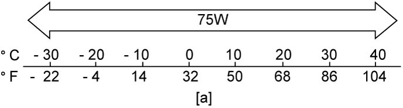

5B
| Manual Transaxle Oil Change |
1)Before changing oil, stop engine and hoist vehicle horizontally.
2)With vehicle hoisted, check leakage.
If leakage exists, correct it.
If leakage exists, correct it.
3)Remove engine undercover.
4)Remove oil level / filler plug (2).
5)Remove drain plug (1), and drain oil.
6)Apply sealant to thread of drain plug (1), and tighten it to specified torque.
7)Add new specified oil until oil level reaches lower end of oil filler plug hole (3) as shown in figure.

NOTE:
It is highly recommended to use “SUZUKI GEAR OIL 75W”.
Manual transaxle oil specification
:
SUZUKI GEAR OIL 99000–22B27–036
:
API GL-4 (For SAE classification, refer to viscosity chart.)
Manual transaxle oil capacity
Reference:
2.5 liters (5.28/4.40 US/Imp. pt.)
Viscosity chart

 "Expand image")
| [a]: | Temperature |
 "Expand image")
 "Expand image")